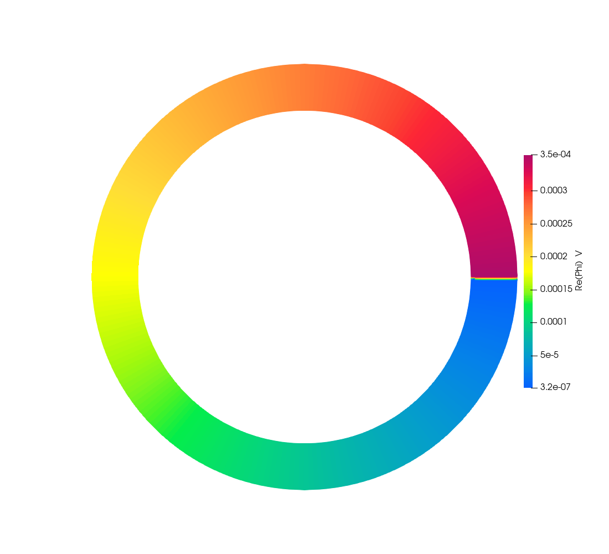
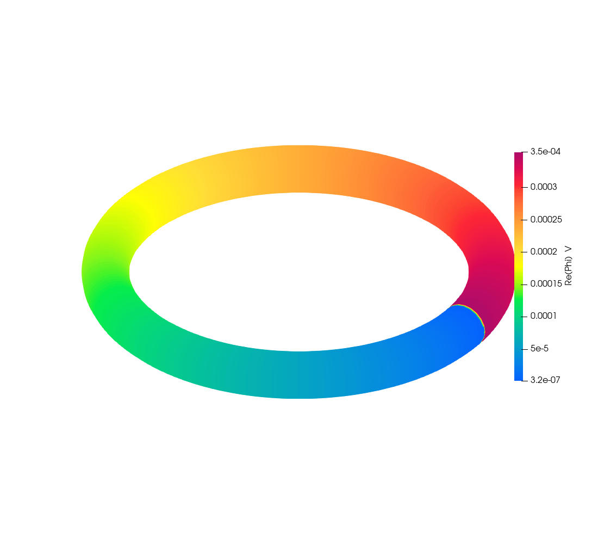
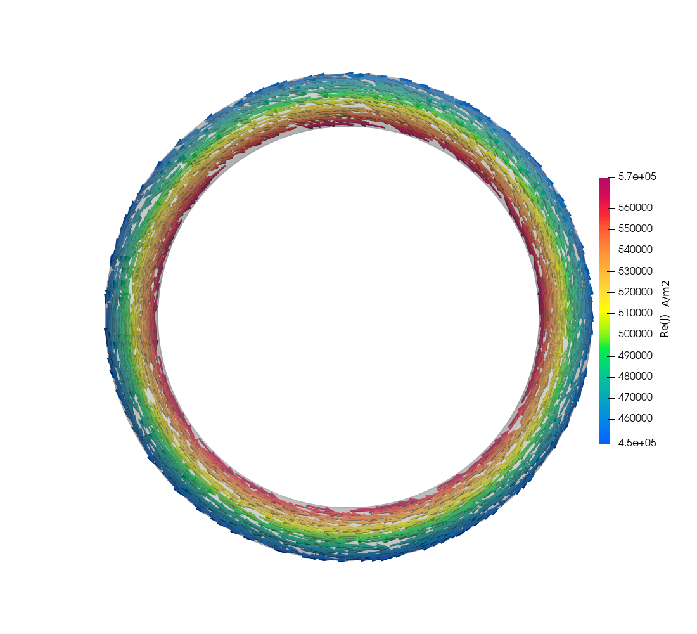
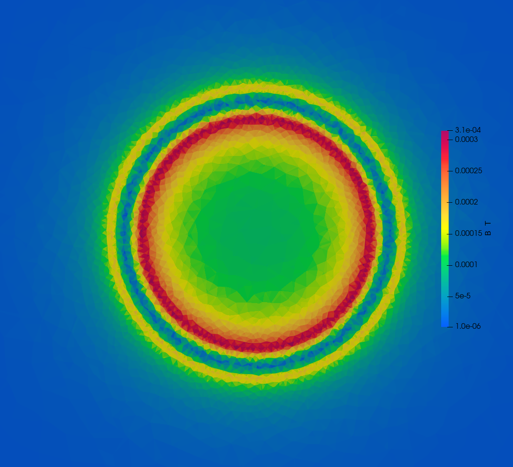
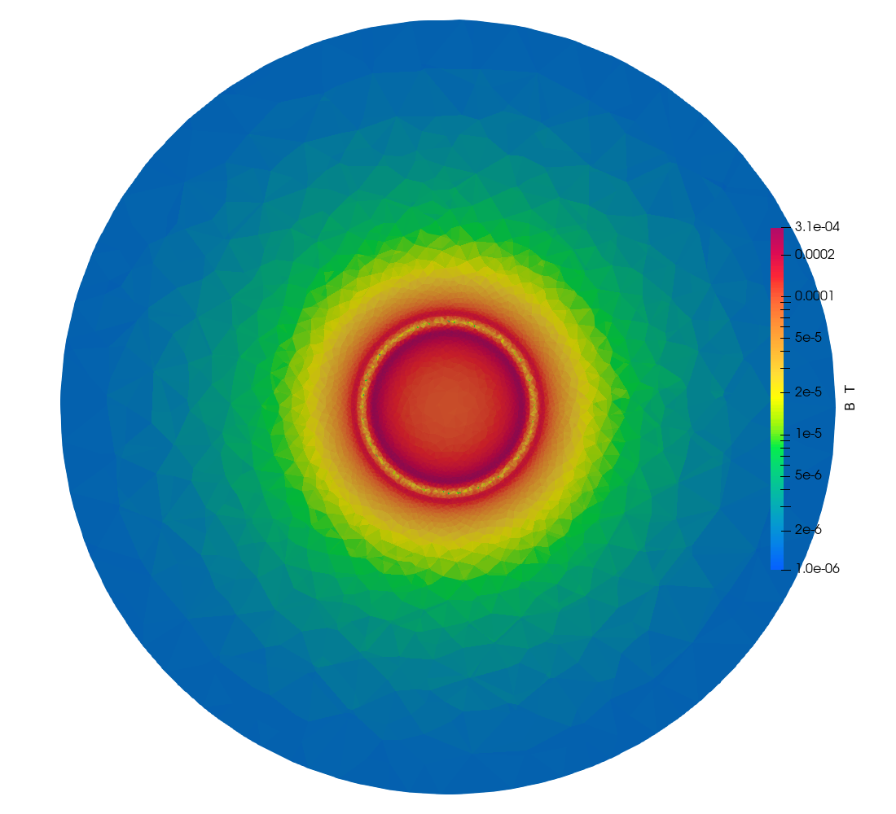
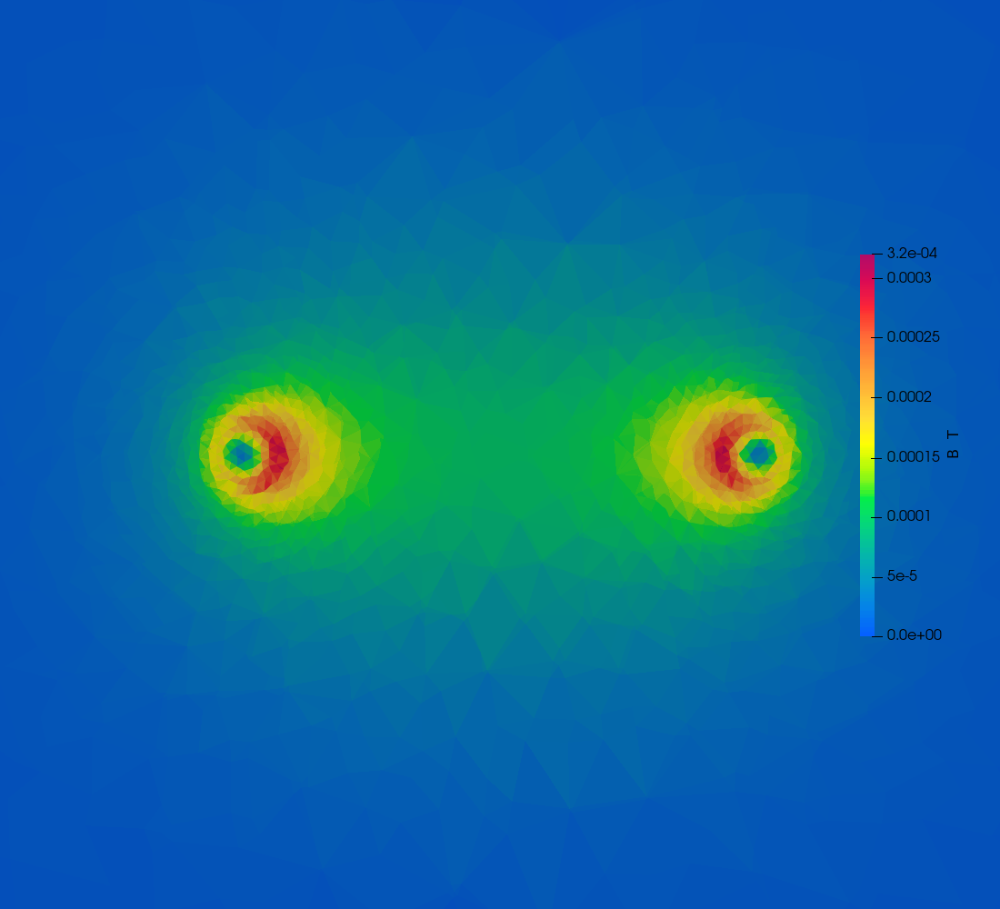
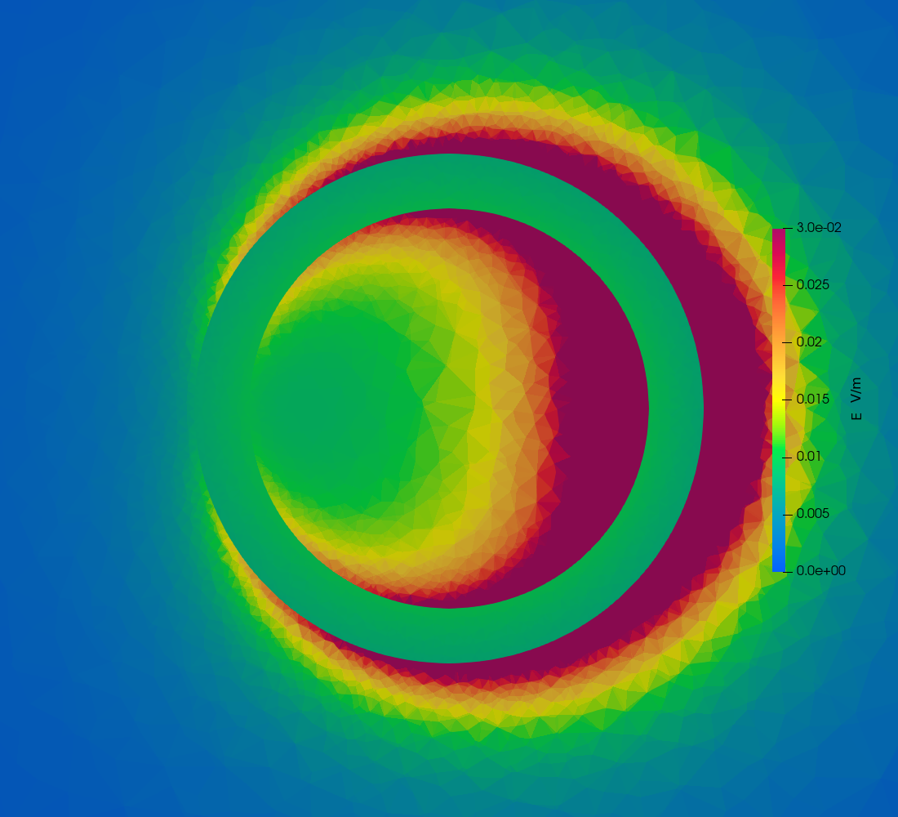
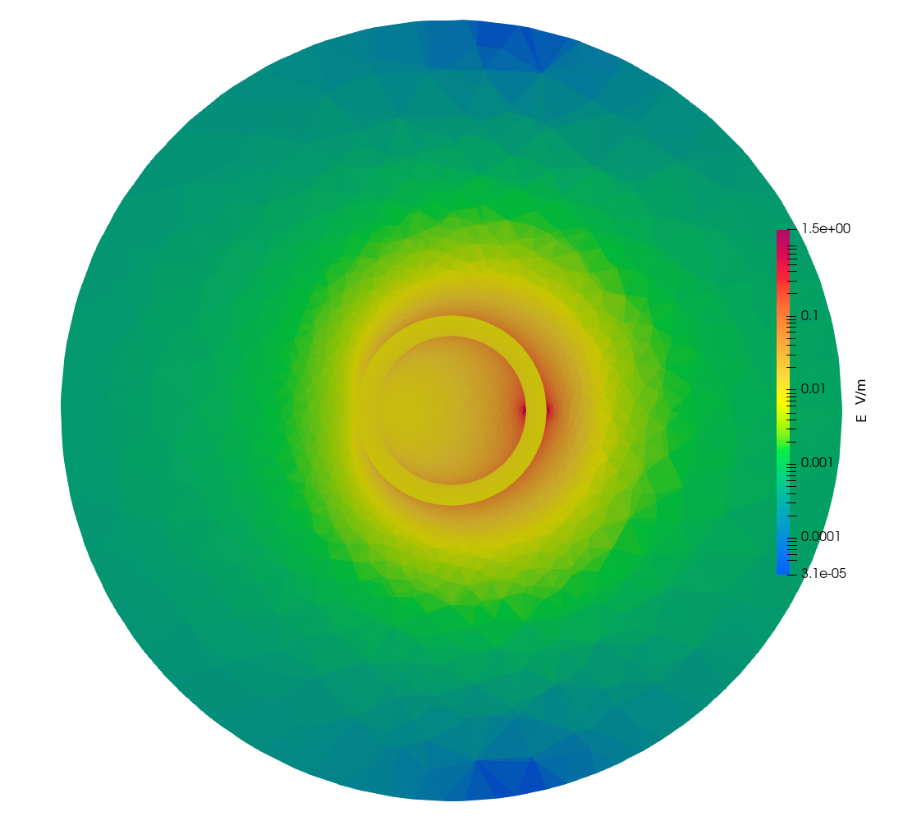
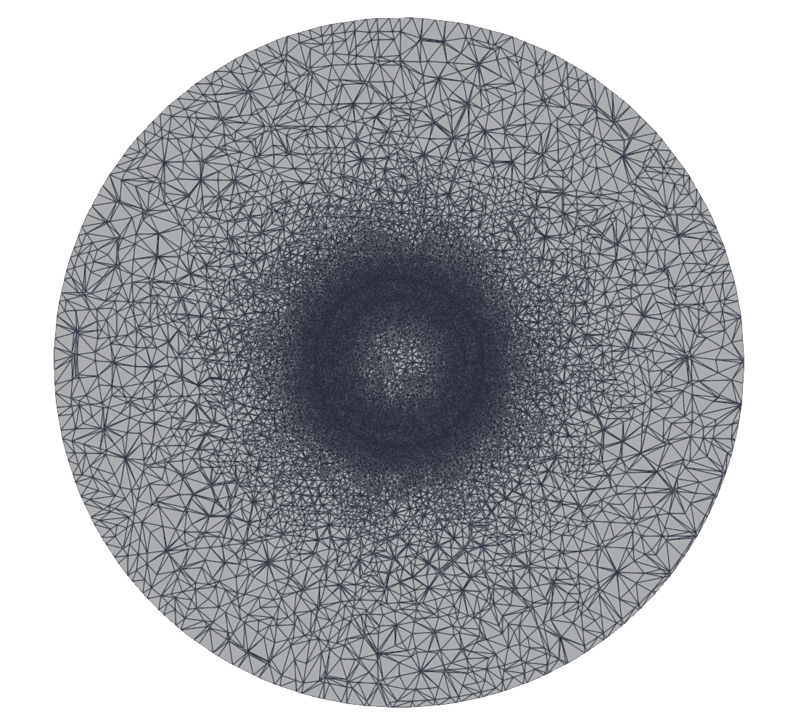
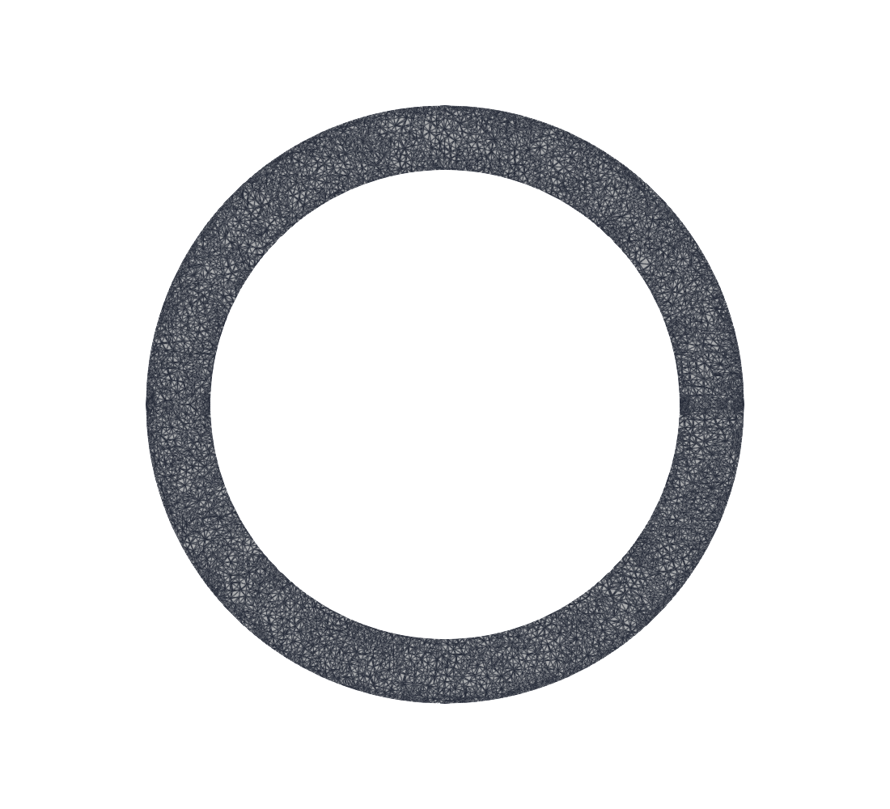

Hybrid A‑Φ finite-element solver, tree‑cotree gauge. The first multiply connected case in the suite: the current circulates with no terminal anywhere on the outer boundary, so the ring can only be driven by cutting it.
Cases 01–04 are all a straight rod. A rod is simply connected and the tree‑cotree gauge has nothing hard to do on one. A ring is multiply connected: the cotree has to span the loop, the current has to be able to go all the way round, and there is no outer surface to attach an electrode to. It can only be driven through a cut.
The check no other case can make. Inject 1 A across the cut, then measure the current crossing a plane where nothing is prescribed:
| measured | |
|---|---|
|I| through the cut, where 1 A is injected | 0.9999784 A |
|I| through θ = π/2, nothing prescribed | 1.000183 A |
The current circulates the whole way round. A gauge that wrongly killed the loop would show up there and in no other case in the suite.
| Conductor | copper, σ = 5.8e7 S/m; loop radius R = 6.5 mm, tube circumradius a = 0.8 mm, a 20‑gon cross-section revolved about z |
| Domain | cylinder of air, 30 mm radius, 30 mm tall, n × A = 0 on the outer boundary |
| Excitation | 1.0 A through the cut at θ = 0, 50 Hz |
| Skin depth | δ = 9.346 mm, so a/δ = 0.086 — no skin effect |
| Mesh | 38,248 nodes, 237,031 elements, Netgen-optimised |
| Measured | Z = 3.543192e‑04 + 6.087457e‑06 j Ω |
Not from a document. Two published closed forms, solved together against a reference impedance measured for this geometry:
R = 6.5 mm with a = 0.8 mm reproduces the reference R to
1.3 % and L to 0.27 %, and agrees independently with dimensions measured off
the reference model's own scale bar — centreline diameter 1.23 cm, tube 1.4–2.0 mm.
The reference was run at 100 Hz, not 50. That was stated nowhere and falls
out of the same two equations. Im(Z)/ω is 19.75 nH at 100 Hz and
39.50 nH at 50 Hz, and no geometry consistent with the reported R can
give 39.50 nH. It does not matter for what this case checks: a/δ is 0.086 at
50 Hz and 0.121 at 100 Hz, so there is no skin effect either way and R and
L are frequency independent between them.

+z. It ramps smoothly
all the way round and falls off a cliff at the cut, at 3 o'clock.
This is the picture of what an internal cut actually does, and nothing in cases 01–04 looks like it. One side of the cut is the port's 0 V reference; the other floats to whatever the solve returns. That jump is the terminal voltage — 3.543192e‑04 V here, for 1 A, which is the impedance.
Φ is single-valued on each side: 193 nodes sit exactly on the cut plane and every one reads the same value, so the jump is a genuine discontinuity across a zero-thickness interface, not a gradient through a thin region.

Look at the colour, not just the arrows. |J| is highest on the
inner radius — 5.8e5 against 4.4e5 A/m², a ratio of 1.32. That is not
noise: current flowing azimuthally takes a shorter path on the inside, so it crowds there.
(R+a)/(R−a) = 1.28, and the measured 1.32 is that effect.
It is also why the exact R below is not 2πR/(σA).


Three things in the zoomed view are worth naming, because each is a check. |B| has a
minimum at the tube axis — the wire's own field vanishes there. It peaks at the tube
surface, where Ampère gives μ₀I/(2πa) = 2.5e‑4 T. And the
inner surface is hotter than the outer, because the rest of the loop's field adds on the
inside and subtracts on the outside.

y = 0 plane, which cuts the tube twice — at the
port (θ = 0, right) and at θ = π (left). Range pinned:
see the note in §4.3.Each conductor carries its own circulating field with a minimum on its axis, and the loop's hole between them is brighter than the outside — the two contributions add in there and oppose outside. This is the plane the cut is made on.


median |E| | |
|---|---|
| inside the conductor | 8.584e‑03 V/m (J/σ = 8.621e‑03, 0.4 %) |
| air within 3 mm of the tube | 2.037e‑02 V/m |
air beyond ρ = 25 mm | 3.719e‑04 V/m |
| at the cut itself | 1.72 V/m — 200x the conductor |
The air's E is LARGER than the conductor's, and that surprised me. It is not
−jωA, which is only 2.6e‑04 V/m here. It is the
electrostatic field of the ring's own varying surface potential: the loop carries 0.354 mV
from one side of the cut to the other, and that voltage appears across the surrounding air. The
figure shows it strongest near the cut, which is where the gradient is.
Two ranges are pinned, and both had to be. |E| spikes to
1.72 V/m at the cut, because Φ jumps across a zero-thickness interface — on an
auto range that one spike takes the whole colour map and everything else reads as flat blue, which
is how this figure first came out. The port plane in §4.2 has the opposite problem: the slice
spans the whole 30 mm domain while the view is zoomed to 12 mm, so an auto range is set by
a far-field minimum three decades below anything visible and the picture lands uniformly red.
| measured | 3.543192e‑04 Ω |
| exact for this shape | 3.546955e‑04 Ω |
| error | −0.106 % |
The exact value is not 2πR/(σA). Current flows azimuthally, so the
path length is 2πρ and varies across the section: the conductance is
σ ∫ dA/(2πρ), and the current crowds to the inner radius as §3
shows. Ignoring that is a 0.44 % error — four times the solver's own.
verify_loop.py takes it straight off the mesh as
(1/2π) ∫ dV/ρ², assuming nothing about the shape.
The 2.5 % gap to the reference tool decomposes exactly: +1.61 % because our cross-section is a 20‑gon, 1.64 % less area than a circle, and 0.91 % between the reference and the exact round-torus value.
| L | vs the closed form | |
|---|---|---|
| measured | 19.377 nH | −2.15 % |
| reference tool | 19.748 nH | −0.27 % |
| closed form, free space | 19.8027 nH | — |
The reference agrees with theory; we do not. It was −4.02 %, and half of that turned out to be a mesh bug — see §6.2. The remaining 2.15 % is open.
The domain is ruled out: doubling it to 60 mm moved L by +0.2 %, and a
dipole estimate puts the field energy beyond 30 mm at about 0.09 nH, 0.4 %. The
remaining suspect is resolution of the air beyond one wire radius: a wire loop's magnetic
energy is logarithmically distributed, roughly half of it between 1 and 10 wire radii from the
surface, and that shell is meshed at 0.25 mm growing to 4 mm. Refining it needs about
700k tets in the shell alone, which does not fit in 32 GB. Recorded rather than
resolved, and expected.txt pins L as a regression guard rather than a
validation.
Extracting L here is ill-conditioned. ωL/R = 0.017: the
reactance is 1.7 % of the resistance, so Im(Z) is a small difference on a large
product. Dividing by the measured current instead of the imposed 1 A lets that
current's own 0.02 % imaginary part into the answer and moves L by 1.3 %
— fifty times its own size. The verifier divides by the imposed current.


The obvious construction — an OpenCASCADE Torus, cut, fragmented against the
air — fails with “Invalid boundary mesh (overlapping facets)”: a curved torus
face overlapping itself. That was tried eight ways: partial tori welded with
Coherence, cuts by oversized discs, by exact-size discs, by thin boxes, cuts moved off
the parametric seam, the seam rotated away from the cuts, the air fragmented before and after the
cut. Every one failed identically.
Revolving a polygon has none of that trouble, and it is what this project does for every
other conductor anyway, because planar lateral faces make ∂Φ/∂n = 0 hold
exactly.
Note also that a ring needs two cuts. Cut in one place it is still one connected volume, because the current can go round the other way.
The ring was first revolved as one +Pi extrude and one -Pi extrude. It
meshes, it passes every check, and both halves come out with the right volume — 40.386
against 40.307 mm³, equal to 0.2 %. But:
| tets | mean h | volume | |
|---|---|---|---|
+Pi half | 11,621 | 0.302 mm | 40.386 mm³ |
-Pi half | 4,557 | 0.373 mm | 40.307 mm³ |
Half the conductor was quietly meshed two and a half times coarser. It showed up as a ragged lower half in the field plots, and was measured before it was believed. Chaining two positive sweeps — the second starting from the first's end face — gives a count ratio of 0.988.
And it moved the physics. L went 19.038 → 19.377 nH,
closing 1.87 of the 4.02 points of the gap to theory. It also retracts an earlier conclusion
recorded in this case: that refining the tube moved L the wrong way, so resolution was
not the cause. That test refined lc_ring globally while half the ring stayed coarse, so
it was measuring the wrong thing. Resolution is part of it.
check.bat runs this case through verify_loop.py, not
../verify.py: the rod verifier finds the drive by differencing Φ between two end
caps, and a ring has none. A case-local verify_*.py wins where one exists.
|I| through the cut | 0.9999784 vs 1.0, tol 1e‑3 |
|I| at θ = π/2 | 1.000183 vs 1.0, tol 1e‑3 |
R vs exact for this shape | 0.99894 vs 1.0, tol 2e‑3 |
L | 19.377 nH, tol 0.05 — a regression guard, not a validation |
gmsh loop.geo -3 -o loop.msh
..\run_case.bat loop_50hz.aphi
"C:\Program Files\ParaView 6.1.1\bin\pvbatch.exe" make_plots.py output
"C:\Program Files\ParaView 6.1.1\bin\pvbatch.exe" verify_loop.py
sh build_doc.shloop_big.geo is the 60 mm domain used for the boundary test in §5.2; it is
kept because a negative result is worth being able to reproduce. Run
build_doc.sh after regenerating figures, or this document keeps showing the
previous run's pictures — they are baked in.